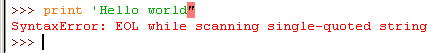
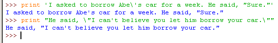

Now we will write a program to tell jokes to the user. Before we go into the code, you should know how your programs run on the computer.
The computer you use runs a very large program, called an operating system. Your operating system (called an OS (pronounced like the letters "oh-ess") for short) may be Windows, MacOS, Linux or another one. The OS is a program that runs other programs called applications like a web browser, word processor, email client, or computer games. The OS makes it easy for programmers to write applications and games that can run on computers made up of different hardware.
Hardware are the parts of the computer that you can touch (the monitor, or the keyboard and mouse, or a printer). Software is another name for programs like the OS or applications or games that run on the computer. Think of the computer as if it were a book. The book's hardware would be the cover and paper pages and even the ink on the page (the things you can touch.) The book's software would be the story and characters that the book describes. Using software or playing games that were made by someone else is like reading a book of stories that was written by another person. But writing software (such as your own games) is like writing your own stories.
It would be very difficult for programmers to make their programs run on several different pieces of hardware. For example, when you write your games, you don't need to know how to make text appear on all the different monitors made by all the different companies in the world. Your program just has a print statement, which tells the OS to figure out how to make it appear on the monitor no matter what brand or type of monitor the user has.
The OS makes running programs easy on us, but it still only knows a language called machine code. Machine code has some very, very, very basic instructions that are simple enough for computer's main microchip (called the CPU ("see-pee-you"), or Central Processing Unit) to understand. Writing programs in the machine code language is very long and boring.
Machine code is written in ones and zeros and look like pages and pages of this: 10101101 00110000 11000000. These instructions aren't very easy for humans to work with. Assembly language gives instructions names like MOV, JMP, PUSH, or XOR. This makes reading and writing the instructions easier but putting them together in a program is still long and complicated.
This is where higher-level programming languages come in. High-level languages include Python, Java, C++, Pascal, Perl, Basic, and many others. These languages take care of many of the details of machine code. A programmer writes her program in a higher-level language like Python, and then a program called the interpreter translates this language into machine code that the computer executes. Even though our "Hello world!" program was just one line long when written in Python, in machine code it would be several hundred or a few thousand lines.
The interpreter is the program you downloaded from http://www.python.org and installed in chapter one. That download also included a program called IDLE, which is the program we type our code into. When we run a program in the file editor, or type an instruction into the interactive shell, the IDLE program sends that source code to the Python interpreter for translation. The interpreter translates it into machine code, and then the CPU understands how to run the program.
Whew! That was a lot of information. As computers get faster and faster, they also become more and more complicated. To manage all of this complexity, programmers started to write programs that would help them write new programs! One of these programs is the Python interpreter that you are using. This is kind of like using a stone axe to help build a hammer, and then a hammer to help build a electric drill and other power tools, and then using those power tools to build a large bulldozer.
The reason I am explaining all of this is so that you understand that when you write code in Python, it is being passed to another program called the Python interpreter, which then translates it so that the operating system and computer can run your code.
This next program is simpler compared to the "Guess the Number" game in chapter two. Open a new file editor window by clicking on File, then clicking on New Window and enter this source code:
What do you get when you cross a snowman with a vampire?
Frostbite!
What do dentists call an astronaut's cavity?
A black hole!
Knock knock.
Who's there?
Interrupting cow.
Interrupting cow wh MOO!
jokes.py
- print 'What do you get when you cross a snowman with a vampire?'
- raw_input()
- print 'Frostbite!'
- print 'What do dentists call a astronaut\'s cavity?'
- raw_input()
- print 'A black hole!'
- print 'Knock knock.'
- raw_input()
- print "Who's there?"
- raw_input()
- print 'Interrupting cow.'
- raw_input()
- print 'Interrupting cow wh',
- print 'MOO!'
Don't worry if you don't understand eveyrthing in the program. Just save and run the program.
Let's look at the code more carefully.
- print 'What do you get when you cross a snowman with a vampire?'
- raw_input()
- print 'Frostbite!'
Here we have three print statements. Because we don't want to tell the player what the joke's punchline is, we have a call to the raw_input() function after the first print statement. The player can read the first line, press Enter, and then read the punchline.
The user can still type in a string and hit Enter, but because we aren't storing this string in any variable, the program will just forget about it and move to the next line of code.
The last call to the print statement has no string. This tells the program to just print a blank line. Blank lines can be useful to keep our text from being bunched up together.
- print 'What do dentists call a astronaut\'s cavity?'
- raw_input()
- print 'A black hole!'
In the first print statement above, you'll notice that we have a slash right before the single quote (that is, the apostrophe). This backslash ( \ is a backslash, / is a forward slash) tells us that the letter right after it is an escape character. An escape character helps us print out letters that are hard to enter into the source code. There are several different escape characters, but in our print statement the escape character is the single quote.
We have to have the single quote escape character because otherwise the Python interpreter would think that this quote meant the end of the string. But we want this quote to be a part of the string. When we print this string, the backslash will not show up.
What if you really want to display a backslash? This line of code would not work:
print 'He flew away in a green\teal helicopter.'
That print statement would show up as:
He flew away in a green eal helicopter.
This is because the "t" in "teal" was seen as an escape character since it came after a backslash. The escape character t simulates pushing the Tab key on your keyboard. Escape characters are there so that strings can have characters that cannot be typed in.
Instead, try this line:
print 'He flew away in a green\\teal helicopter.'
Here is a list of escape characters in Python:
| Escape Characters | ||
| \\ | Backslash (\) | |
| \' | Single quote (') | |
| \" | Double quote (") | |
| \n | Newline | |
| \t | Tab | |
Strings don't always have to be in between single quotes in Python. You can also put them in between double quotes. These two lines print the same thing:
print 'Hello world'
print "Hello world"
But you cannot mix quotes. This line will give you an error if you try to use them:
print 'Hello world"

I like to use single quotes because I don't have to hold down the shift key on the keyboard to type them. It's easier to type, and the computer doesn't care either way.
But remember, just like you have to use the escape character \' to have a single quote in a string surrounded by single quotes, you need the escape character \" to have a double quote in a string surrounded by double quotes. For example, look at these two lines:
print 'I asked to borrow Abe\'s car for a week. He said, "Sure."'
print "He said, \"I can't believe you let him borrow your car.\""

Did you notice that in the single quote strings you do not need to escape double quotes, and in the double quote strings you do not need to escape single quotes. The Python interpreter is smart enough to know that if a string starts with one type of quote, the other type of quote doesn't mean the string is ending.
- print 'Knock knock.'
- raw_input()
- print "Who's there?"
- raw_input()
- print 'Interrupting cow.'
- raw_input()
- print 'Interrupting cow wh',
- print 'MOO!'
Did you notice the comma at the end of the second to last string? Normally, print adds a newline character to the end of the string it prints. (This is why a blank print statement will just print a newline.) This comma means we do not want to print a newline at the end. This is why 'MOO!' appears next to the previous line, instead of on its own line.
Things Covered In This Chapter
- Using print with no parameters to display blank lines.
- Escape characters.
- Using single quotes and double quotes for strings.
- Using commas at the end of print statements.